SEJARAH
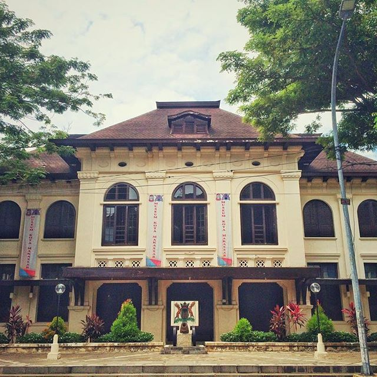
Awal kota dan bandar Makassar berada di muara Sungai Tallo dengan pelabuhan niaga kecil di wilayah itu pada penghujung abad XV. Sumber-sumber Portugis memberitakan, bahwa bandar Tallo itu awalnya berada di bawah Kerajaan Siang di sekitar Pangkajene. Pada pertengahan abad XVI, Tallo bersatu dengan sebuah kerajaan kecil lainnya yang bernama Gowa, dan mulai melepaskan diri dari kerajaan Siang, bahkan menyerang dan menaklukkan kerajaan-kerajaan sekitarnya.
Akibat semakin intensifnya kegiatan pertanian di hulu sungai Tallo, mengakibatkan pendangkalan sungai Tallo, sehingga bandarnya dipindahkan ke muara sungai Jeneberang, disinilah terjadi pembangunan kekuasaan kawasan istana oleh para ningrat Gowa-Tallo yang kemudian membangun pertahanan benteng Somba Opu, yang seratus tahun kemudian menjadi wilayah inti Kota Makassar. Pada masa pemerintahan Raja Gowa XVI, didirikan Benteng Rotterdam, pada masa itu terjadi peningkatan aktivitas pada sektor perdagangan lokal, regional dan internasional, sektor politik serta sektor pembangunan fisik oleh kerajaan. Masa itu merupakan puncak kejayaan Kerajaan Gowa, namun selanjutnya dengan adanya perjanjian Bungaya menghantarkan Kerajaan Gowa pada awal keruntuhan. Komoditi ekspor utama Makassar adalah beras, yang dapat ditukar dengan rempah-rempah dari Maluku maupun barang-barang manufaktur asal Timur Tengah, India dan Cina di Nusantara Barat. Dari laporan saudagar Portugal maupun catatan-catatan lontara setempat, diketahui bahwa peranan penting saudagar Melayu dalam perdagangan yang berdasarkan pertukaran hasil pertanian dengan barang-barang impor. Dengan menaklukkan kerajaan-kerajaan kecil di sekitarnya, yang pada umumnya berbasis agraris, maka Makassar menguasai kawasan pertanian yang relatif luas dan berusaha pula untuk membujuk para saudagar di kerajaan sekitarnya agar pindah ke Makassar, sehingga kegiatan perdagangan semakin terkonsentrasi di bandar niaga baru Makassar.
Hanya dalam seabad saja, Makassar menjadi salah satu kota niaga terkemuka dunia yang dihuni lebih 100.000 orang (kota terbesar ke 20 dunia). Pada zaman itu jumlah penduduk Amsterdam, yang termasuk kota kosmopolitan dan multikultural baru mencapai sekitar 60.000 orang. Perkembangan bandar Makassar yang demikian pesat itu, berkat hubungannya dengan perubahan-perubahan pada tatanan perdagangan internasional masa itu. Pusat utama jaringan perdagangan di Malaka, ditaklukkan oleh Portugal pada tahun 1511, demikian juga di Jawa Utara semakin berkurang mengikuti kekalahan armada lautnya di tangan Portugal dan pengkotakkotakan dengan kerajaan Mataram. Bahkan ketika Malaka diambil alih oleh Kompeni Dagang Belanda (VOC) pada tahun 1641, banyak pedagang Portugis ikut pindah ke Makassar.
Sampai pada pertengahan abad ke-17, Makassar berupaya merentangkan kekuasaannya ke sebagian besar Indonesia Timur dengan menaklukkan Pulau Selayar dan sekitarnya, kerajaan-kerajaan Wolio di Buton, Bima di Sumbawa, Banggai dan Gorontalo di Sulawesi bagian Timur dan Utara serta mengadakan perjanjian dengan kerajaan-kerajaan di Seram dan pulau-pulau lain di Maluku. Secara Internasional, sebagai salah satu bagian penting dalam dunia Islam, Sultan Makassar menjalin hubungan perdagangan dan diplomatik yang erat dengan kerajaan-kerajaan Banten dan Aceh di Indonesia Barat, Golconda di India dan Kekaisaran Otoman di Timur Tengah.
Hubungan Makassar dengan dunia Islam diawali dengan kehadiran Abdul Ma’mur Khatib Tunggal atau Dato’ Ri Bandang yang berasal dari Minangkabau, Sumatera Barat yang tiba di Tallo (sekarang Makassar) pada bulan September 1605. Beliau mengislamkan Raja Gowa ke-XIV I-MANGNGARANGI DAENG MANRABIA dengan gelar SULTAN ALAUDDIN (memerintah Tahun 1593-1639), dan dengan Mangkubumi I-MALLINGKAANG DAENG MANYONRI KARAENG KATANGKA yang juga sebagai Raja Tallo. Kedua raja ini, yang mulai memeluk Agama Islam di Sulawesi Selatan. Pada tanggal 9 Nopember 1607, tepatnya hari Jum’at, diadakan shalat Jum’at pertama di Mesjid Tallo dan dinyatakan secara resmi bahwa penduduk Kerajaan Gowa-Tallo telah memeluk Agama Islam, pada waktu bersamaan pula, diadakan shalat Jum’at di Mesjid Mangallekana di Somba Opu. Tanggal inilah yang selanjutnya diperingati sebagai Hari Jadi Kota Makassar sejak Tahun 2000, yang sebelumnya hari jadi kota Makassar diperingati pada tanggal 1 April setiap tahunnya. Para ningrat Makassar dan rakyatnya dengan giat ikut dalam jaringan perdagangan internasional, dan interaksi dengan komunitas kota yang kosmopolitan itu menyebabkan sebuah “creative renaissance” yang menjadikan Bandar Makassar sebagai salah satu pusat ilmu pengetahuan terdepan pada zamannya. Koleksi buku dan peta, zaman itu masih langka di Eropa namun di Makassar sudah banyak terkumpul. Makassar merupakan salah satu perpustakaan ilmiah terbesar di dunia, dan para sultan tak segan-segan memesan barang-barang paling mutakhir dari seluruh pelosok bumi, termasuk bola dunia dan teropong terbesar pada waktunya, yang dipesan secara khusus dari Eropa. Ambisi para pemimpin Kerajaan Gowa-Tallo untuk semakin memperluas wilayah kekuasaan serta persaingan Bandar Makassar dengan Kompeni Dagang Belanda (VOC) berakhir dengan perang paling dahsyat dan sengit yang pernah dijalankan Kompeni. Pasukan Bugis, Belanda dan sekutunya dari Ternate, Buton= dan Maluku memerlukan tiga tahun operasi militer di seluruh kawasan Indonesia Timur. Baru pada Tahun 1669, akhirnya dapat merata-tanahkan kota Makassar dan benteng terbesarnya, Somba Opu. Bagi Sulawesi Selatan, kejatuhan Makassar di tangan federasi itu merupakan sebuah titik balik yang berarti bahwa Bandar Niaga Makassar menjadi wilayah kekuasaan VOC, dan beberapa pasal perjanjian perdamaian membatasi dengan ketat kegiatan pelayaran antar-pulau Gowa-Tallo dan sekutunya. Pelabuhan Makassar ditutup bagi pedagang asing, sehingga komunitas saudagar hijrah ke pelabuhan-pelabuhan lain. Pada beberapa dekade pertama setelah pemusnahan kota dan bandar Makassar, penduduk yang tersisa membangun sebuah pemukiman baru di sebelah utara bekas Benteng Ujung Pandang, benteng pertahanan pinggir utara kota lama itu pada Tahun 1673 ditata ulang oleh VOC sebagai pusat pertahanan dan pemerintahan diberi nama baru Fort Rotterdam, dan ‘kota baru’ yang mulai tumbuh di sekelilingnya itu dinamakan ‘Vlaardingen’. Pemukiman itu jauh lebih kecil daripada Kota Raya Makassar yang telah dihancurkan. Pada dekade pertama seusai perang, seluruh kawasan itu dihuni tidak lebih 2.000 jiwa, pada pertengahan abad ke-18 jumlah itu meningkat menjadi sekitar 5.000 orang, setengah di antaranya berupa budak. Selama dikuasai VOC, Makassar menjadi sebuah kota yang terlupakan, maupun para penjajah kolonial pada abad ke-19 itu tak mampu menaklukkan jazirah Sulawesi Selatan yang sampai awal abad ke-20 masih terdiri dari lusinan kerajaan kecil yang independen dari pemerintahan asing, bahkan sering harus mempertahankan diri terhadap serangan militer yang dilakukan kerajaan-kerajaan itu. Maka, ‘Kota Kompeni’ itu hanya berfungsi sebagai pos pengamanan di jalur utara perdagangan rempahrempah tanpa hinterland bentuknya pun bukan ‘bentuk kota’, tetapi suatu aglomerasi kampung-kampung di pesisir pantai sekeliling Fort Rotterdam.
TRADISI
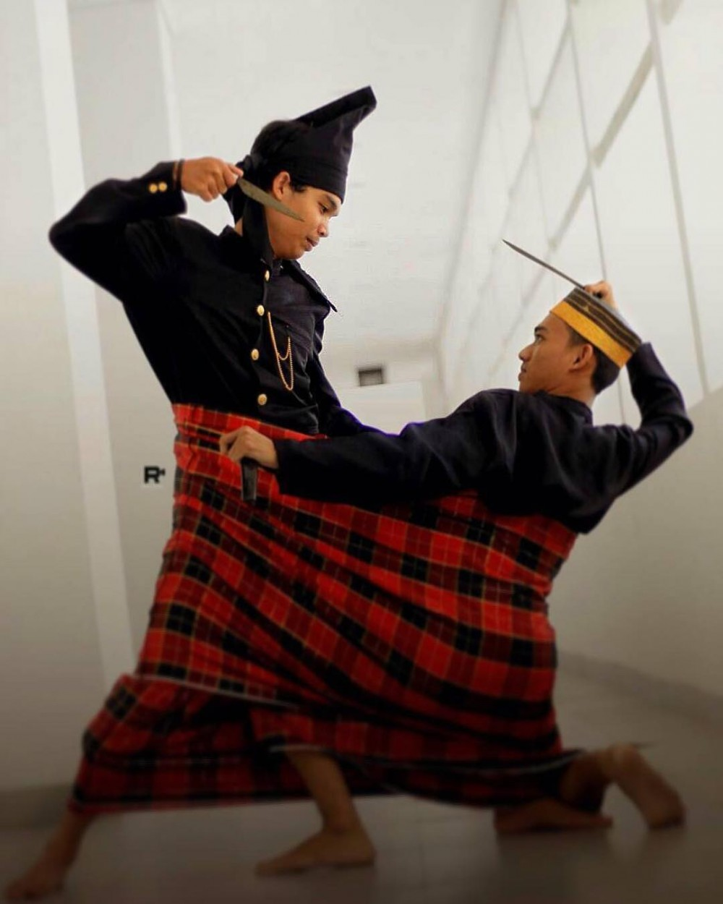
Kebudayaan Suku Makassar Tak jauh berbeda dengan suku bugis, Suku Makassar atau Orang Mangasara sebagian besar menetap di daerah Sulawesi Selatan. Selain berprofesi sebagai pedagang, orang Makassar juga handal berlayar (senang merantau) dan itulah sebabnya jika suku bangsa ini terdapat juga di luar Indonesia, misalnya di Singapura dan Malaysia. Suku Makassar ini diakui akan kebudayaannya, dimana kebudayaan mereka tetap dilestarikan sampai sekarang dan tidak tergerus oleh modernisasi.
Berikut beberapa ritual keupacaraan dan adat istiadat dari daerah Makassar :
Sijagang Laleng Lipa
Sijagang Laleng Lipa adalah salah satu ritual penting pada masyarakat Bugis yang keberadaannya hampir hilang ditelan zaman. Ritual ini dilakukan dengan menyatukan dua pria di dalam sebuah sarung. Kedua pria nantinya akan saling bertarung dan adu kekuatan hingga keduanya sama-sama mati atau sama-sama hidup. Jarang dalam ritual ini pihak yang mati atau hidup sendirian.
Ritual Sijagang Laleng Lipa mulai dilakukan pada masa Kerajaan Bugis ratusan tahun lalu. Di masa lalu, jika ada dua keluarga yang berseteru, penyelesaian terakhirnya adalah dengan adu kekuatan ini. Kalau ada keluarga yang harga dirinya diinjak, pertarungan ini akan dilangsungkan agar segala permasalahan segera diselesaikan dan perselisihan tidak terus terjadi.
Accera Kalompong
Accera Kalompoang merupakan upacara adat untuk membersihkan benda-benda pusaka peninggalan Kerajaan Gowa yang tersimpan di Museum Balla Lompoa. Inti dari upacara ini adalah allangiri kalompoang, yaitu pembersihan dan penimbangan salokoa (mahkota) yang dibuat pada abad ke-14. Mahkota ini pertama kali dipakai oleh Raja Gowa, I Tumanurunga, yang kemudian disimbolkan dalam pelantikan Raja- Raja Gowa berikutnya.
Pencucian benda-benda kerajaan tersebut menggunakan air suci yang diawali dengan pembacaan surat Al-Fatihah secara bersama-sama oleh para peserta upacara yang dipimpin oleh seorang Anrong Gurua (Guru Besar). Khusus untuk senjata-senjata pusaka seperti keris, parang dan mata tombak, pencuciannya diperlakukan secara khusus, yakni digosok dengan minyak wangi, rautan bambu, dan jeruk nipis. Pelaksanaan upacara ini tidak hanya disaksikan oleh para keturunan Raja-Raja Gowa, tetapi juga oleh masyarakat umum dengan syarat harus berpakaian adat Makassar pada saat acara.
Mappalili
Mappalili adalah upacara mengawali musim tanam padi di sawah. Ritual ini dijalankan oleh para pendeta Bugis Kuno yang dikenal dengan sebutan bissu. Selain di Pangkep, komunitas bissu ada di Bone, Soppeng, dan Wajo. Ritual dipimpin langsung Seorang Bissu Puang Matoa.
Puang Matoa terlihat begitu berwibawa di antara bissu yang berkumpul di rumah arajang, yakni tempat pusaka berupa bajak sawah disemayamkan. Mengenakan kemeja bergaris dengan warna dominan putih, dipadu sarung putih polos dan songkok. Suara santun dan tegas selalu keluar dari mulutnya. Tak ada teriakan sedikit pun. Sebagai pengganti teriakannya, Puang Matoa menggunakan katto-katto, sejenis pentungan yang khusus untuk memanggil anak laki-laki, dan kalung-kalung, nama alat untuk memanggil anak perempuan.
Adat Kelahiran
Upacara Daur Hidup (Inisiasi)
Masa kehamilan utamanya pada kehamilan pertama pada suatu keluarga merupakan suatu waktu yang penuh perhatian keluarga kedua belah pihak.
Masa kehamilan pada bulan pertama sampai dengan bulan keempat disebut angngirang. Dalam masa ini muncul keaneh-anehan bagi calon ibu, baik dalam tingkah laku maupun dalam keingin-inginannya. Kedua belah keluarga berusaha memenuhi keinginan calon ibu tersebut terutama yang berupa makanan. Apabila keinginan-keinginan itu tidak dipenuhi akan berakibat tidak baik bagi bakal bayi yang akan dilahirkan. Selama masa kehamilan berlaku pantangan-pantangan bagi si calon ibu, maupun si calon ayah.
Apabila kandungan telah berusia tujuh bulan, maka diadakan upacara anynyapu battang/appakaddok mengngirang yang diebut juga appasilli. Pada upacara ini kedua belah pihak dari keluarga mengadakan macam-macam panganan, di antaranya terdapat kanre jawa picuru (makanan yang mempunyai arti simbolis), serta tidak ketinggalan buah-buahan.
Acara pertama dalam upacara ini, ialah memandikan calon ibu dengan suaminya (nipassilli) dengan maksud untuk menjaga calon ibu maupun bayi yang akan lahir, dengan mengusir dan menolak pengaruh-pengaruh jahan. Selesai mandi calon ibu dan bapak berpakaian adat, rapih, dan bagus kemudian bersanding menghadapi hidangan yang disediakan dan dikerumuni oleh sanak suami istri tersebut disuruh memilih dari salah satu macam penganan yang tersedia, dengan ketentuan mengambil makanan yang sangat diinginkannya. Dari penganan yang diambil, dapat diramal jenis kelamin bayi yang akan dilahirkan.
Setelah ada tanda-tand bayi akan lahir, keluarga kedua belah menunggui bersama sang dukun. Menjelang bayi akan lahir, biasanya calon ibu mudah pallammori dengan tujuan agar si calon ibu mudah melahirkan.
Sesudah bayi lahir, maka bayi bersama plasentanya diletakkan di atas kapparak, lalu sang dukun memotong plasenta bayi tersebut. Plasenta kemudian dibersihkan, lalu dimasukkan ke dalam periuk tanah bersama
Adat Kematian
Upacara Adat Kematian (Ammateang) dalam adat Bugis Makassar merupakan upacara yang dilaksanakan masyarakat Bugis Makasar saat ada seseorang dalam suatu kampung meninggal, maka keluarga, kerabat dekat maupun kerabat jauh, juga masyarakat sekitar lingkungan rumah orang yang meninggal itu berbondong – bondong menjenguknya. Pelayat yang hadir biasanya membawa sidekka (Sumbangan kepada keluarga yang ditinggalkan) berupa barang atau kebutuhan untuk mengurus mayat. Mayat belum mulai diurus seperti dimandikan sebelum semua anggota terdekatnya hadir. Nanti keluarga terdekatnya hadir semua, barulah mayat dimandikan, yang umumnya dilakukan oleh orang-orang tertentu yang memang biasa memandikan mayat atau oleh anggota kelurganya sendiri.
Ada beberapa hal yang perlu dilakukan ketika memandikan mayat, yaitu pajenekang ( menyiramkan air ke tubuh mayat diiringi pembacaan do’a dan tahlil), pasuina ( menggosok bagian-bagian tubuh mayat), Pabbisina (membersihkan anus dan kemaluan mayat yang biasa dilakukan oleh salah seorang anggota keluarga seperti anak,adik atau oleh orang tuanya) dan pamaralui (menyiramkan air mandi terakhir sekaligus mewudhukan mayat). Orang –orang yang bertugas tersebut diberikan pappasidekka (sedekah) berupa pakaian si mayat ketika hidupnya lengkap dengan sarung,baju,celana, dan lain sebagainya. Mayat yang telah selesai dimandikan kemudian dikafani dengan kain kaci oleh keluarga terdekatnya. Setelah itu imam dan beberapa pengikutnya menyembahyangkan mayat menurut aturan Islam.
Sesampai dikuburan, mayat segera diturunkan kedalam liang lahat. Imam atau tokoh masyarakat kemudian meletakan segenggam tanah yang telah dibacakan doa atau mantera-mantera ke wajah jenazah sebagai tanda siame’(penyatuan) antara tanah dengan mayat.setelah itu, mayat ditimbuni mulai tanah sampai selesai. Lalu Imam membacakan talkin dan tahlil dengan maksud agar si mayat dapat menjawaban pertanyaan – pertanyaan malaikat penjaga kubur dengan lancar. Diatas pusara diletakan buah kelapa yang telah dibelah 2 dan tetap ditinggalkan diatas kuburan itu. Diletakan pula payung dan cekko-cekko’. Hal ini juga masih merupakan warisan “kepercayaan lama”(old belief) orang Bugis Makassar, bahwa meskipun seseorang telah meninggal dunia, akan tetapi arwahnya masih tetap berkeliaran. Karena itu, kelapa dan airnya yang diletakan diatas kuburan dimaksudkan sebagai minuman bagi arwah orang yang telah meninggal, sesangkan payung selain untuk melindungi rohnya, juga merupakan simbol keturunan.
Semalaman, di rumah duka diadakan tahlilan dan khatam Al-Quran, yaitu membaca al-Quran secara bergantian. Dari sini mulainya bilampenni, yaitu upacara selamatan sekaligus penghitungan hari kematian yang dihitung mulai dari hari penguburan jenazah.Biasa dalakukan selamatan tujuh hari atau empat puluh harinya. Sekarang ini, upacara bilampenni sudah bergeser namanya menjadi tiga malam saja. Sebagai penutup, pada esok harinya dilakukan dzikir barzanji dan dilanjutkan dantap siang bersama kerabat – kerabat yang di undang.
KULINER
Setelah mempelajari mengenai sejarah dan tradisi kota Makassar, sekarang mari kita mengenal makanan-makanan khas yang ada di Makassar. Berikut merupakan daftar makanan khas Makassar yang patut anda coba:
1. Coto Makassar

Ada yang kurang kalau kamu jalan-jalan ke Sulawesi Selatan tanpa mencoba Coto Makassar. Makanan khas Makassar ini memang memberikan kesan mendalam bagi siapa pun yang pernah menikmatinya. Hidangan ini kaya rempah, yang menjadikan rasanya ‘sangat renyah’ dan akan memberikan kesan mendalam kepada siapa pun pennikmatnya.
Di Makassar, ada beberapa tempat yang direkomendasikan jika kamu tertarik mencoba kuliner ini. Salah satunya, Coto Nusantara dimana kuliner ini disajikan dengan kuah kental dan potongan daging besar, plus ekstra daun bawang dan bawang goreng yang disajikan terpisah. Lokasinya juga masih dekat dengan Pantai Losari, lho!
Lokasi: Jl. Nusantara Baru No.142, Ende, Wajo, Kota Makassar, Sulawesi Selatan
Jam buka: Setiap hari, mulai dari 06.30 hingga 18.00 WITA
Harga: Mulai dari 15,000 IDR per porsi
2. Konro
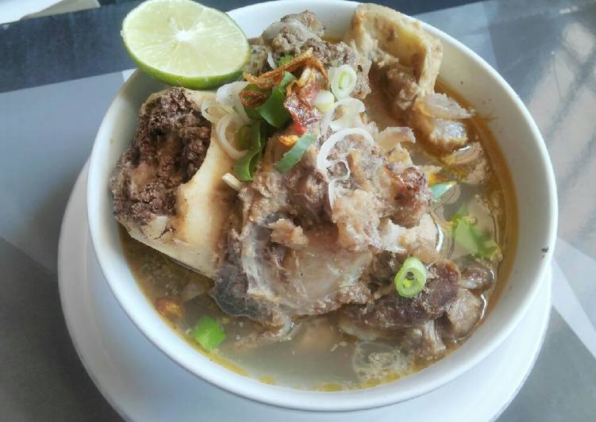
Makanan khas Makassar ini tidak pas untuk para vegan ataupun vegetarian. Maklum, bahan dasarnya adalah iga dan daging sapi yang direbus bersama kayu manis, air asam jawa dan beragam bahan lain, termasuk kluwak, yang biasa dijadikan bumbu dasar untuk rawon Jawa Timur. Sajian sup kaya rempah ini sangat nikmat dicicipi saat panas.
Ingin cari tempat terbaik menikmati hidangan Konro ini? Konro Karebosi adalah jawabannya. Saking terkenalnya, tidak sedikit selebriti, poltisi dan public figure lain yang terlihat di sini. Itu juga sekaligus menjadi petunjuk buat kamu, untuk bersiap-siap antri karena ramainya pengunjung.
Lokasi: Jalan Gunung Lompo Battang No.41-43, Pisang Utara, Ujung Pandang, Kota Makassar, Sulawesi Selatan
Jam buka: Setiap hari, mulai dari 10.00 hingga 22.00 WITA
Harga: Mulai dari 30,000 IDR per porsi
3. Sop Saudara

Sejatinya, makanan khas Makassar ini bukanlah berasal dari Makassar, tapi merupakan kuliner khas Pangkep, Sulawesi Selatan. Namun bagaimana pun juga, yang penting rasanya.
Sop saudara yang populer di Makassar dan bisa kamu coba berada di Jalan Irian. Warung ini buka setiap hari, selama 24 jam dan sudah berdiri sejak 1970an. Sop saudara dengan perpaduan daging sapi berkuah dicampur bihun dan adonan kentang yang sudah digoreng kering, plus paru sapi goreng dengan nasi putih, kamu akan mengetahui alasan mengapa warung ini begitu terkenal di Makassar.
Lokasi: Jalan Dokter Wahidin Sudiro Husodo No.40, Pattunuang, Wajo, Kota Makassar, Sulawesi Selatan
Jam buka: Setiap hari, 24 jam
Harga: 15,000 IDR per porsi
4. Pallubasa

Pallubasa merupakan hidangan yang mirip dengan Coto Makassar, terbuat dari jeroan sapi atau kerbau, dengan semua bahan dimasak dalam waktu yang lama. Yang membedakan dengan Coto Makassar adalah menu pendampingnya. Pallubasa dimakan bersama nasi putih, sementara Coto Makassar dengan ketupat.
Selain hidangan pendampingnya, bumbunya pun sedikit berebeda. Pun demikian dengan tekstur daging yang dihidangkan. Untuk bisa mendapatkan kesan terbaik, Pallubasa Serigala adalah rumah makan yang tepat untuk mencoba hidangan ini.
Lokasi: Jalan Serigala, Mamajang Dalam, Mamajang, Kota Makassar, Sulawesi Selatan
Jam buka: Setiap hari, 09.00 hingga 20.00 WITA
Harga: Mulai dari 13,000 IDR hingga 15,000 IDR
5. Pallumara

Lebih tertarik untuk menikmati seafood di Makassar, kamu bisa mencoba Palumara, makanan berbahan dasar ikan. Sup berkuah kuning dari bumbu kunyit ini mirip dengan ikan asam manis. Kepala kakap merah menjadi bahan dasarnya, dengan tongkol atau bandeng menjadi pengganti.
Cara terbaik menikmati Palumara adalah dengan nasi hangat, ditemani dengan minumaan dingin. Spot yang paling tepat untuk mendapatkan kesan paling pas adalah di rumah makan Ulu Juku, yang tidak hanya menyajikan Palumara, tapi juga makanan khas Makassar lainnya.
Lokasi: Jalan Prof.Dr. Abdurrahman Basalamah No.99A, Karampuang, Panakkukang, Kota Makassar, Sulawesi Selatan
Jam buka: Setiap hari, 09.00 hingga 22.00 WITA
Harga: Mulai dari 30,000 IDR
6. Barongko
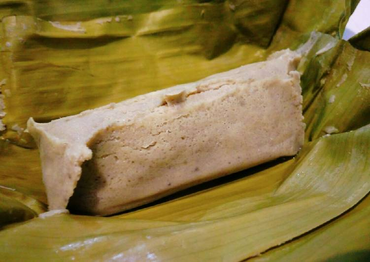
Makassar tidak hanya terkenal dengan makanan beratnya. Kue-kue basah di Makassar juga memiliki cita rasa yang maknyus. Salah satunya, Barongko.
Kue berbahan dasar pisang ini manis dan memiliki tekstur lembut. Kue dibuat dalam cetakan khusus dan kemudian dibungkus dengan daun pisang sebelum disajikan. Cara menikmatinya pun bisa sesuai selera, panas mau pun dingin. Di Makassar, tempat terbaik untuk bisa mencicipi kue tradisional ini adalah di MAMA Toko Kue dan Es Krim.
Lokasi: Jalan Serui No.19, Pattunuang, Wajo, Kota Makassar, Sulawesi Selatan
Jam buka: Setiap hari, 08.00 hingga 20.00 WITA
Harga: Mulai dari 3,500 IDR per biji
7. Pisang Epe
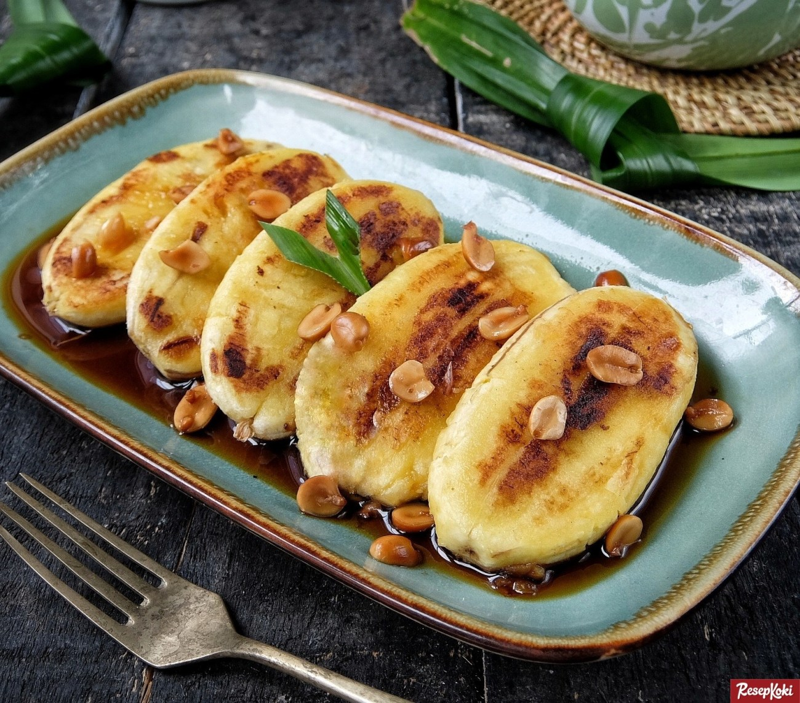
Makanan khas Makassar dari bahan pisang kepok ini begitu ikonik. Pisang kepok setengah masak dibakar di atas bara api hingga harum, dibelah dan ditekan hingga pipih, kemudian dibakar kembali. Tambahkan topping campuran gula merah dan air daun pandan juga garam, serta durian, jika ada, maka kamu akan mendapatkan camilan dengan rasa istimewa.
Momen paling pas menikmatinya saat sore hingga malam, sementara tempat ideal untuk mencoba dessert Makassar ini adalah di sepanjang pantai Losari. Meski banyak penjual yang menjajakan camilan ini, kualitas rasanya hampir sama, dan enak semua. Slurp!
Lokasi: Jalan Penghibur, Losari, Maloku, Ujung Pandang, Maloku, Ujung Pandang, Kota Makassar, Sulawesi Selatan
Jam buka: Setiap hari, 16.00 hingga 24.00 WITA
Harga: Mulai dari 10,000 IDR hingga 12,000 IDR per porsi
8. Es Palu Butung
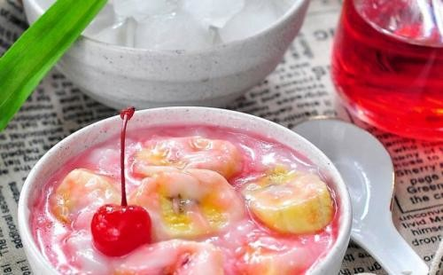
Kalau ingin menikmati es campur ala Makassar, silakan mencoba Es Palu Butung. Tidak hanya menawarkan rasa yang manis, tapi juga menyajikan sensasi menyegarkan. Kuliner ini paling cocok untuk dinikmati saat udara panas dan kamu dijamin akan minta tambah.
Es Palu Butung terdiri dari potongan pisang manis, bubur sumsum ditambah susu kental manis, sirup merah dan es serut, disajikan dalam mangkuk. RM Bravo menjadi salah satu lokasi favorit di Makassar untuk menikmati Es Palu Butung ini.
Lokasi: Jalan Sultan Alauddin Nomor 27, Mangasa, Tamalate, Mangasa, Tamalate, Kota Makassar, Sulawesi Selatan
Jam buka: Setiaap hari, mulai 09.00 hingga 21.00 WITA
Harga: Mulai dari 10,000 IDR hingga 15,000 IDR per porsi
9. Gogoso
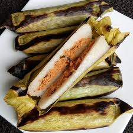
Camilan ini ‘keluar’ di waktu-waktu lebaran saja. Biasanya dihidangkan bersama telur asin, gogoso merupakan camilan yang terbuat dari beras ketan yang dibakar dalam daun pisang.
Makanan khas Makassar ini banyak disukai warga keturunan Bugis-Makassar. Meski biasanya keluar di waktu yang khusus, kamu masih bisa mendapatkannya di MAMA Toko Kue dan Es Krim. Rasanya gurih dan sedap, lho!
Lokasi: Jalan Serui No.19, Pattunuang, Wajo, Kota Makassar, Sulawesi Selatan
Jam buka: Setiap hari, 08.00 hingga 20.00 WITA
Harga: Mulai dari 10,000 IDR untuk dua gogoso dan satu telur asin
10. Kapurung
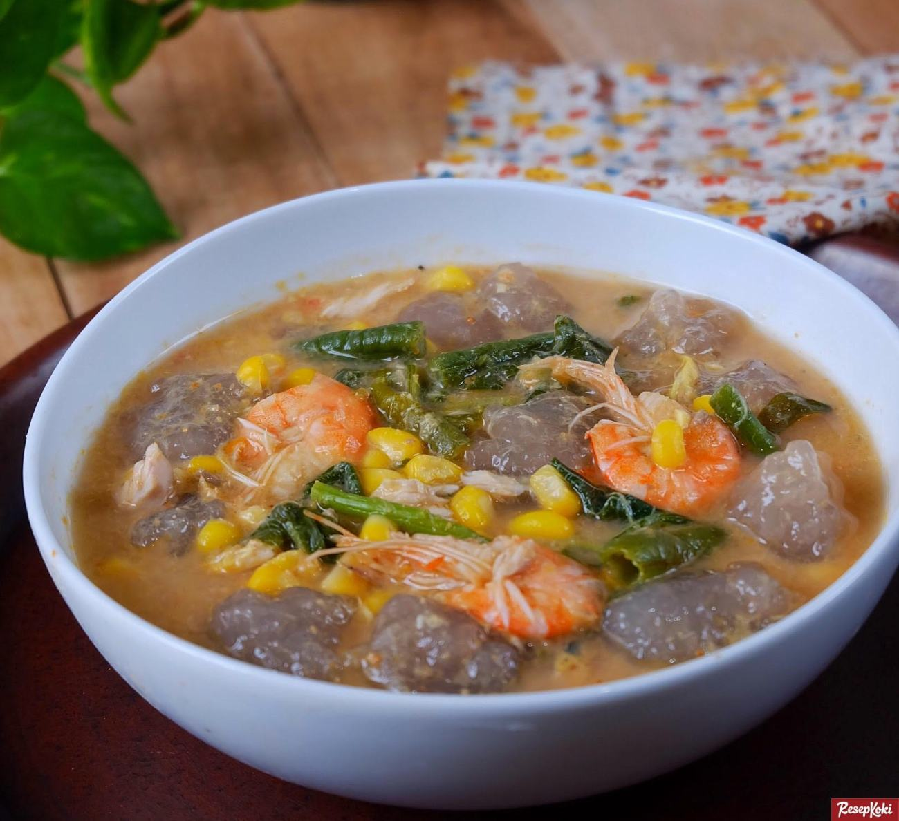
Apa jadinya ikan atau daging ayam dicampur bersama bermacam sayuran dan sari atau tepung sagu? Kamu bisa mencicipinya langsung makanan khas Makassar bernama Kapurung. Kuliner ini merupakan sajian tradisional khas Sulawesi Selatan, terutama di daerah Luwu, Kota Palopo.
Meski merupakan makanan tradisional, rasanya yang manis dan asam memberikan kesegaran bagi penikmatnya dan berhasil membuat Kapurung merambah ke daerah metropolitan, termasuk Makassar. Lokasi terbaik untuk merasakan kuliner lezat ini adalah di Rumah Makan Kapurung Aroma Palopo. Joss!
Lokasi: BTP Bumi Tamalanrea Permai, Jalan Tamalanrea Raya Blok C No.12A, Tamalanrea, Makassar, Kota Makassar, Sulawesi Selatan
Jam buka: Setiap hari, mulai dari 10.00 hingga 22.00 WITA
Harga: Mulai dari 15,000 IDR per porsi
11. Mie Titi
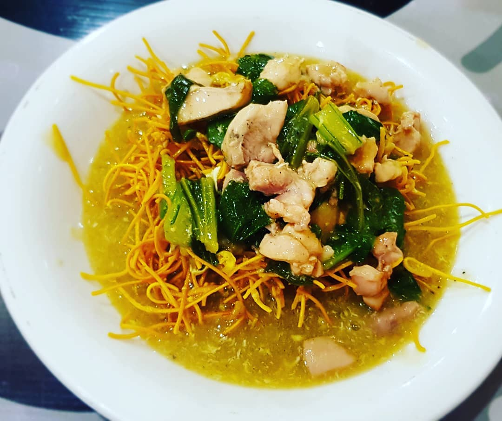
Ingin mencoba kuliner ala Tionghoa di Makassar, Mie Titi adalah yang harus kamu coba. Bukan hanya rasanya yang gurih, kombinasi ‘lauk’ di sajian ini juga begitu melimpah, mulai dari daging, seafood hingga sayuran yang menyehatkan.
Jika kamu tertarik menikmati sajian ini, langsung saja menuju ke Mie Titi Panakukkang, tempat di mana semuanya bermula. Kamu juga harus mempersiapkan diri untuk terkejut dengan porsinya yang luar biasa.
Lokasi: Jalan Boulevard No.25, Masale, Panakkukang, Kota Makassar, Sulawesi Selatan
Jam buka: Setiap hari, mulai dari 10.00 hingga 2.00 WITA
Harga: Mulai dari 15,000 IDR untuk satu porsi besar
12. Juku Pallu Ce’la
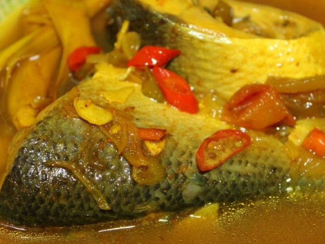
Terbuat dari ikan Cakalang, atau bisa juga ikan Layang, Bolu, Sibula’ atau Tembang, kuliner Pallu Ce’la dimasak dengan bumbu yang cukup sederhana, garam dan kunyit. Namun, karena teknik memasak yang spesial, ada rasa yang begitu berkesan ketika kamu mencicipinya.
Kalau kamu tertarik mencicipi masakan rumahan warga Makassar ini, Rumah Makan Seafood Apong menyajikannya. Harganya juga relatif terjangkau, lho!
Lokasi: Jalan Pangeran Diponegoro No.95, Melayu, Wajo, Melayu, Wajo, Kota Makassar, Sulawesi Selatan
Jam buka: Setiap hari, 11.00 hingga 21.00 WITA
Harga: Mulai dari 15,000 IDR per porsi
13. Bebek Palekko
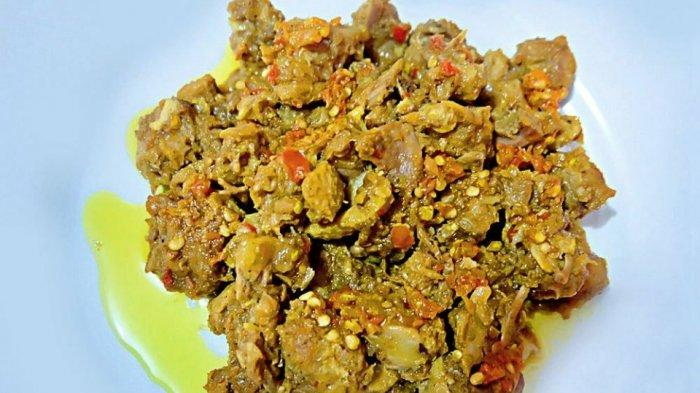
Makanan khas Makassar dari bahan bebek? Bebek Palekko adalah kuliner yang harus kamu cari. Untuk yang paling favorit, kamu bisa langsung menuju ke Palekko Makassar.
Hidangan ini merupakan makanan khas Bugis yang terbuat dari daging bebek yang dicincang. Rasanya didesain sedemikian rupa untuk membuat penikmatnya bercucuran keringat karena kepedasan. Meski demikian, kamu tidak akan bisa berhenti hingga hidangan di depan kamu habis. Ajaib, kan?
Lokasi: Jalan Tamalanrea Raya BTP Blok C No 27 A, Tamalanrea, Kota Makassar, Sulawesi Selatan
Jam buka: Setiap hari, mulai dari 09.00 hingga 22.00 WITA
Harga: Mulai dari 40,000 IDR untuk bebek kecil (setengah ekor) dan 55,000 IDR per porsi untuk bebek ukuran besar (utuh satu ekor)
14. Burasa
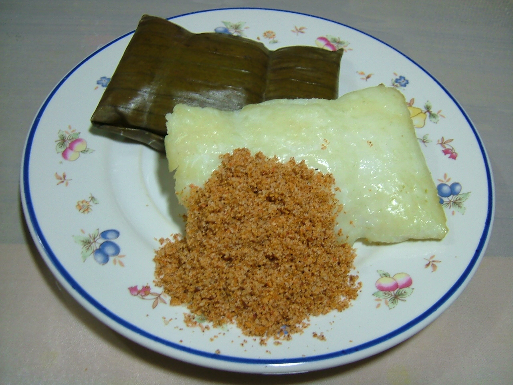
Burasa, sajian yang mirip lontong ini, terbuat dari beras dengan tekstur lembut dan dibungkus daun pisang muda. Burasa dihidangkan dengan taburan bumbu kelapa kering, garam, gula dan cabai.
Tidak sulit menemukan ‘lontong ala Makassar’ ini. Kamu bisa mencarinya di pasar atau tempat penjual kue dan makanan. Bagi kamu yang ingin segera merasakan Burasa, Bakso 33 Makassar siap menyajikannya.
Lokasi: Jl. Bete-Bete No.35, Barana, Kec. Makassar, Kota Makassar, Sulawesi Selatan
Jam buka: Setip hari, mulai dari 07.30 hingga 20.00 WITA
Harga: Mulai dari 5,000 IDR
15. Songkolo Bagadang
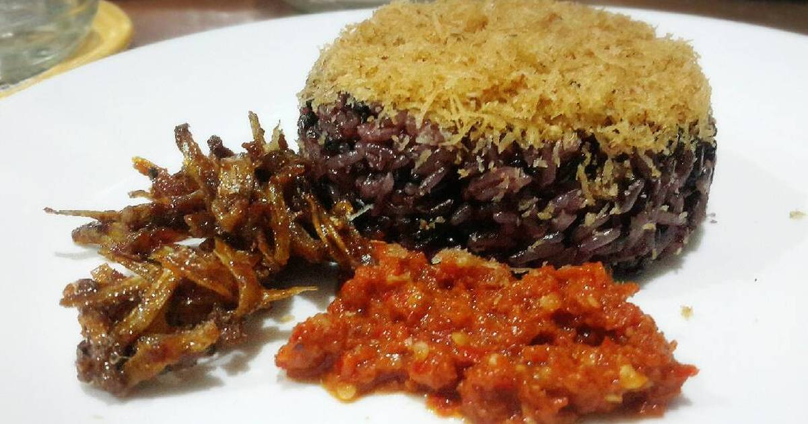
Kulineran tengah malam di Makassar, mengapa tidak? Ada Songkolo Bagadang yang patut kamu coba. Nasi ketan hitam atau putih dengan serundeng atau parutan kelapa sangrai sebagai toppingnya ini sangat menarik untuk dicicipi. Belum lagi tambahan ikan teri asin, telur dan sambal kuning untuk menambah kenikmatan.
Makanan khas Makassar ini kerap dijumpai di acara-acara adat di Sulawesi Selatan. Tapi kamu tidak perlu khawatir karena kamu bisa mencobanya di Songkolo Bagadang Alhamdulillah yang siap menemani malam panjangmu di Makassar.
Lokasi: Jl. Pannara No.19, Antang, Manggala, Kota Makassar, Sulawesi Selatan
Jam buka: Setiap hari, 24 jam
Harga: Mulai dari 5,000 IDR per porsi
16. Sarabba
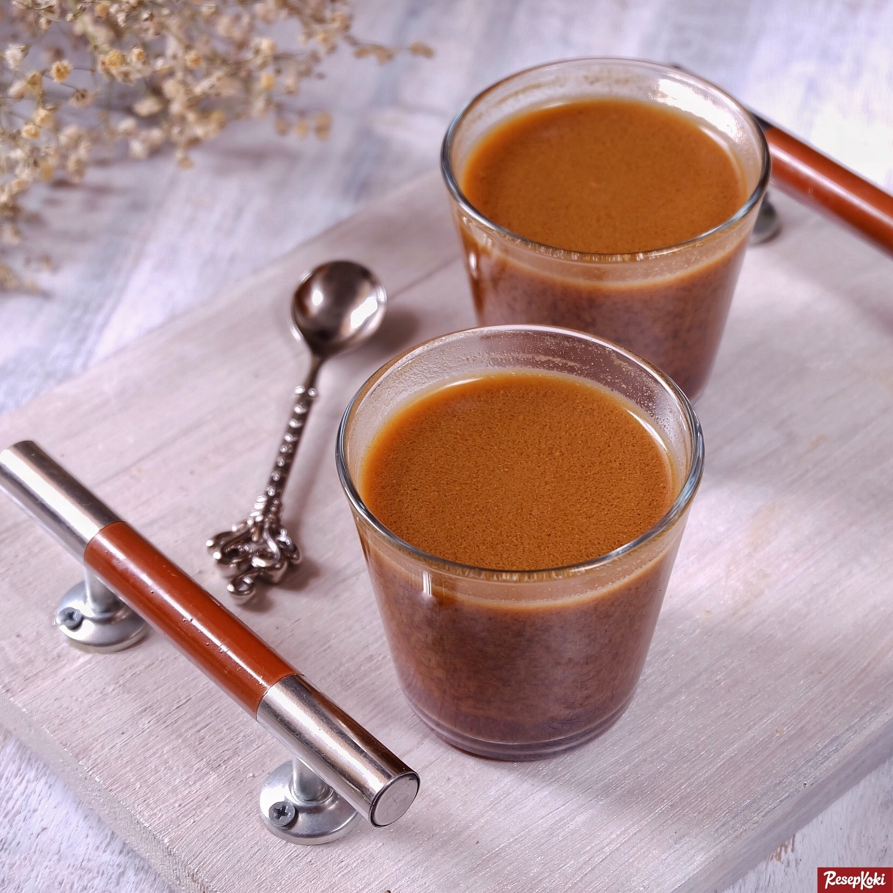
Jika di daerah lain memiliki sekoteng, stmj dan wedang uwuh, Makassar juga menyajikan minuman sejenis dengan nama Sarabba. Terbuat dari campuran jahe, kuning telur, gula aren dan merica bubuk, kamu akan mendapatkan sensasi yang menghangatkan badan kala mengonsumsi minuman ini.
Sarabba Daeng Hasna menjadi salah satu warung minuman ternama di Makassar yang menyajikannya. Berdiri sejak 1983, warung Sarabba ini sempat beberapa kali pindah lokasi sebelum akhirnya kini menetap di jalan Bulusaraung, setidaknya hingga saat ini.
Lokasi: Jl. Bulu Saraung, Pisang Utara, Ujung Pandang, Kota Makassar, Sulawesi Selatan
Jam buka: Setiap hari, mulai 07.30 hingga 22.00 WITA
Harga: Mulai dari 7,500 IDR untuk sarabba biasa, 10,000 IDR untuk sarabba susu atau sarabba telur
17. Konro Bakar
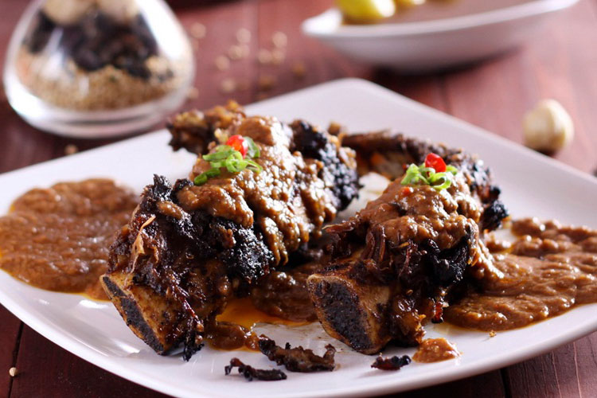
Jika sudah pernah mencicipi Sop Konro, tidak ada salahnya mencoba Konro Bakar, yang pastinya menawarkan sensasi berbeda dengan cita rasa yang istimewa. Sekali lagi, makanan khas Makassar ini bukan untuk para vegan, ya!
Iga yang dibakar dan disajikan dalam kondisi panas ini harus dinikmati hingga tidak tersisa. Tidak perlu malu akan belepotan karena sausnya karena itulah tanpa kamu menikmati hidangan ini sepenuhnya. Kalau tidak sabar untuk mencoba, langsung menuju ke Konro Karebosi ya!
Lokasi: Jalan Gunung Lompo Battang No.41-43, Pisang Utara, Ujung Pandang, Kota Makassar, Sulawesi Selatan
Jam buka: Setiap hari, mulai dari 11.00 hingga 23.00 WITA
Harga: Mulai dari 40,000 IDR per porsi
18. Sop Ubi
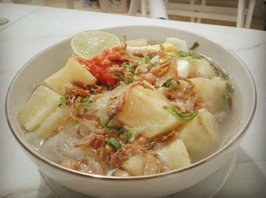
Jika kamu tidak cukup mengenal sop ubi Makassar, tidak ada salahnya mencobanya di Sop Ubi Datumuseng, salah satu yang paling terkenal di Sulawesi Selatan.
Sop dengan isian ubi yang dipotong kecil, tauge, bihun, telur, daun bawang, bawang goreng dan daging itu sangat pas dinikmati saat panas. Jangan lupa juga untuk menambahkan makanan sampingan, seperti emping, kacang goreng, kerupuk udang, bahkan burasa.
Lokasi: Jl. Datumuseng (Dalam Lorong) (Samping RS Stella Maris), Makassar, Sulawesi Selatan
Jam buka: Setiap hari, mulai 10.00 hingga 22.00 WITA
Harga: Mulai dari 20,000 IDR per porsi